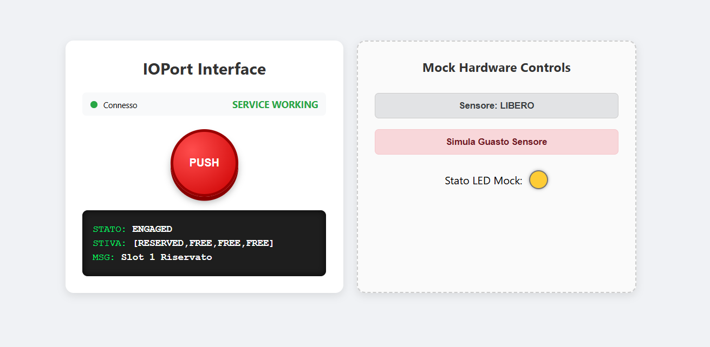

Goal Sprint1: Sviluppare un prototipo software funzionante incentrato sul componente cargoservice. Il sistema dovrà essere in grado di elaborare stimoli di input fittizi (che simulano la pressione del pulsante della IOPort, loadrequest), aggiornare coerentemente lo stato di occupazione degli slot della stiva (hold_status) e governare i cicli di temporizzazione per il disimpegno del sistema.
Problem analysis
Individuazione dei componenti del sottosistema
In questa fase analizziamo la natura computazionale dei componenti coinvolti nel perimetro dello Sprint 1:
- cargoservice: come evidenziato nello Sprint 0, è il cuore della logica di business e governa una macchina a stati complessa. Non può essere un componente passivo (POJO) perché deve essere reattivo a messaggi asincroni (la richiesta dell'utente) e al contempo proattivo nella gestione dei vincoli temporali (deve svegliarsi autonomamente allo scadere del timeout di 30 secondi senza sollecitazioni esterne). Viene quindi modellato come QActor.
- ioport: è l'entità di frontiera che interfaccia il mondo esterno (utente/browser) con il core applicativo. Gestisce stimoli concorrenti bidirezionali: cattura l'azione dell'utente (click sul pulsante) per inoltrare la richiesta a cargoservice, e riceve gli aggiornamenti di stato per notificarli all'interfaccia. Anch'esso deve essere modellato come QActor.
- Hold: rappresenta la mappa logica degli alloggiamenti. Dato che non possiede un thread di controllo autonomo né reagisce spontaneamente a stimoli esterni, ma viene interrogata e manipolata in modo sequenziale unicamente dall'attore cargoservice, è opportunamente modellata come un POJO Java puro.
Scelta della tecnologia per l'IOPort (Web GUI vs dispositivo dedicato)
Come già discusso nei requisiti, l'IOPort deve presentare un'interfaccia per il cliente finale con un display informativo e un pulsante di richiesta. Valutando le alternative:
- Terminale da riga di comando / Mock testuale: semplice da realizzare ma inadatto a rappresentare l'interazione reale richiesta dal committente (utente finale).
- Pannello embedded dedicato: introduce forti vincoli hardware e vincola l'accesso a una singola postazione fisica.
- WebGUI accessibile via Browser: opzione preferenziale. Permette di simulare realisticamente sia l'interfaccia cliente sia eventuali controlli di test (es. simulatore dello stato del sensore), riduce i costi infrastrutturali e consente una visualizzazione contemporanea e distribuita dello stato del sistema.
Il divario tecnologico tra Browser e QAk: perché non basta TCP nativo e perché si esclude il Polling
L'adozione di un'interfaccia Web introduce un disallineamento (abstraction & technology gap) rispetto all'ecosistema QAk:
- Limitazioni del Browser: il runtime QAk comunica tramite socket TCP scambiandosi messaggi formattati secondo la sintassi proprietaria IApplMessage. I browser web, per motivi di sicurezza legati alle policy di sandboxing, non consentono al codice JavaScript di aprire socket TCP/IP grezzi.
- Scarto del Polling HTTP: un approccio basato su richieste periodiche (HTTP GET ogni N secondi) introdurrebbe latenza non deterministica nella notifica del cambio di stato (es. notifica immediata di timeout o accettazione richiesta) e genererebbe un traffico di rete inutile e scalabile negativamente all'aumentare dei client connessi.
- Scelta di WebSocket: si adotta il protocollo WebSocket. Esso fornisce un canale full-duplex su una singola connessione TCP persistente, permettendo al server di inviare aggiornamenti push asincroni in tempo reale alla GUI non appena lo stato cambia, senza richiedere componenti middleware esterni (come un broker MQTT) che appesantirebbero inutilmente l'architettura di questo sprint.
Il componente Ponte (IOPortWsAdapter) e la concorrenza tra Thread
La gestione del socket WebSocket introduce una criticità architetturale legata al modello a memoria isolata degli attori:
La libreria del server web/WebSocket (es. Javalin) elabora le connessioni e i messaggi in arrivo su un proprio pool di thread worker, distinto dal thread su cui gira il ciclo di vita (loop di ricezione) dell'attore ioport.
Nel modello QAk, nessun thread esterno può invocare direttamente metodi interni di un attore per mutarne lo stato, pena la violazione delle garanzie di thread-safety e la corruzione della mailbox.
Soluzione: si introduce una classe ausiliaria Java/Kotlin, IOPortWsAdapter, di proprietà esclusiva di ioport. L'adapter riceve gli eventi dal thread WebSocket e, per consegnarli all'attore, utilizza l'unico canale lecito e thread-safe previsto dal runtime: l'invocazione di sendMsgToMyself(dispatch).
Formato dei messaggi e scambio dati
Mentre tra gli attori ioport e cargoservice si impiega la semantica nativa QAk (Request/Reply e Dispatch), sul canale WebSocket verso il browser si sceglie un formato JSON minimale:
- Browser -> Server:
{ "type": "pushButton" }oppure{ "type": "setOccupied", "value": true }. - Server -> Browser:
{ "type": "update", "state": "ENGAGED", "hold": "1/4", "msg": "Richiesta accettata" }.
L'adapter si occupa della serializzazione e deserializzazione, mantenendo il frontend completamente agnostico rispetto alla sintassi IApplMessage di QAk.
Semplificazione a singolo contesto per lo Sprint 1
In conformità con il piano evolutivo definito nello Sprint 0, per lo Sprint 1 entrambi gli attori (cargoservice e ioport) risiedono all'interno di un unico contesto logico locale (ctxcargoservice). Questo consente di concentrare la validazione sulla corretta dinamica degli stati, sulla gestione del tempo e sullo scambio messaggi, rimandando la distribuzione fisica su host e contesti remoti distinti allo Sprint 2.
Test plans
I test plan per lo Sprint 1 hanno lo scopo di verificare in modo riproducibile e formale che la sequenza di stimoli produca esattamente le transizioni e le emissioni di messaggi previste dai requisiti.
| Caso di test | Precondizione | Input/Azione | Risultato atteso |
|---|---|---|---|
| TC1: Richiesta accettata | Almeno 1 slot FREE nella Hold; sensore non occupato |
Ricezione dispatch pushButton da ioport |
cargoservice invia reply loadaccepted(SLOT, HOLD); passa da idle a engaged; ioport riceve e notifica la GUI |
| TC2: Rifiuto IOPort occupato | Flag sensore su occupato (setOccupied(true)) |
Ricezione dispatch pushButton da ioport |
cargoservice invia reply loadrejectedd(retrylater, HOLD); lo stato resta invariato (idle) |
| TC3: Rifiuto stiva piena | Tutti e 4 gli slot occupati/riservati nella Hold | Ricezione dispatch pushButton con sensore libero |
cargoservice risponde con loadrejected(full, HOLD); nessuno slot viene modificato |
| TC4: Timeout 30 secondi | Sistema appena passato a engaged, slot riservato | Nessun evento di carico per 30000 ms (whenTime 30000) |
cargoservice invoca releaseReserved() sulla Hold, emette dispatch updateDisplay verso ioport con messaggio di timeout e torna allo stato idle |
Project
Nello spirito del corso, l'architettura logica e il comportamento dinamico del prototipo sono formalizzati primariamente nel modello eseguibile sprint1.qak, da cui il compilatore/generatore del runtime QAk produce il codice sorgente Kotlin degli attori.
I componenti accessori a supporto (la struttura dati Hold, l'adapter di rete IOPortWsAdapter e le risorse web della GUI) sono confinati in classi di utilità Java/Kotlin e file statici ben isolati.
Definizione dei Messaggi e del Contesto (sprint1.qak)
I messaggi applicativi scambiati tra le entità sono così formalizzati:
System sprint1
// --- Interazione Request/Reply tra ioport e cargoservice ---
Request loadrequest : loadrequest(OCCUPIED)
Reply loadaccepted : loadaccepted(SLOT, HOLD) for loadrequest
Reply loadrejected : loadrejected(REASON, HOLD) for loadrequest
// --- Messaggi interni di comando e notifica ---
Dispatch pushButton : pushButton(N)
Dispatch setOccupied : setOccupied(FLAG)
Dispatch updateDisplay : updateDisplay(STATE, HOLD, MSG)
// --- Contesto unico per lo Sprint 1 ---
Context ctxcargoservice ip [host="localhost" port=8050]
- loadrequest / loadaccepted / loadrejected: definiscono il protocollo transazionale request-reply con cui ioport interroga cargoservice.
- pushButton / setOccupied: sono messaggi asincroni (dispatch) iniettati dall'adapter verso ioport per notificare le azioni dell'utente sulla Web GUI.
- updateDisplay: dispatch con cui cargoservice notifica autonomamente a ioport un cambio di stato da visualizzare sul display (es. a seguito dello scadere del timeout).
L'attore cargoservice
L'attore gestisce la logica di business e governa il timeout di 30 secondi per la transizione tra gli stati idle, engaged e disengaged. Incapsula l'oggetto Hold mediante la direttiva withobj.
QActor cargoservice context ctxcargoservice {
[#
var Slot = -1
var HoldStatus = ""
#]
withobj hold using "utils.Hold()"
State idle initial {
println("$name | pronto in attesa di richieste (IDLE)") color magenta
}
Transition t0 whenRequest loadrequest -> handleRequest
State handleRequest {
onMsg(loadrequest : loadrequest(OCCUPIED)) {
[# val isOcc = payloadArg(0).toBoolean() #]
if [# isOcc #] {
[# HoldStatus = hold.getStatusString() #]
replyTo loadrequest with loadrejected : loadrejected(retrylater, $HoldStatus)
} else {
[# Slot = hold.reserveFirstFree() #]
[# HoldStatus = hold.getStatusString() #]
if [# Slot != -1 #] {
replyTo loadrequest with loadaccepted : loadaccepted($Slot, $HoldStatus)
} else {
replyTo loadrequest with loadrejected : loadrejected(full, $HoldStatus)
}
}
}
}
Goto engaged if [# Slot != -1 && !payloadArg(0).toBoolean() #] else idle
State engaged {
println("$name | ENGAGED: attesa posizionamento carico (30s)") color magenta
// Simulazione LED: stato lampeggiante
println("LED Status -> BLINKING") color yellow
}
Transition t1 whenTime 30000 -> disengaged
State disengaged {
println("$name | Timeout 30s scaduto: rilascio slot $Slot e ritorno in IDLE") color red
[#
hold.releaseReserved(Slot)
Slot = -1
HoldStatus = hold.getStatusString()
#]
// Spegnimento LED (simulato)
println("LED Status -> OFF") color yellow
// Notifica autonoma verso ioport
forward ioport -m updateDisplay : updateDisplay(IDLE, $HoldStatus, "Timeout scaduto: slot liberato")
}
Goto idle
}
Osservazione sul Timeout: La transizione temporizzata Transition t1 whenTime 30000 -> disengaged è governata interamente dal runtime QAk. Il disimpegno (disengaged) è un'iniziativa autonoma di cargoservice che propaga una notifica push (updateDisplay) verso ioport senza che quest'ultimo l'abbia esplicitamente richiesta.
L'attore ioport
L'attore funge da mediatore: reagisce agli stimoli provenienti dalla Web GUI tramite l'adapter, invia la richiesta a cargoservice, e riceve le notifiche di aggiornamento.
QActor ioport context ctxcargoservice {
[#
var isOccupied = false
var wsPort = 7070
#]
State s0 initial {
println("$name | Inizializzazione IOPortWsAdapter sulla porta $wsPort") color green
[# val adapter = utils.IOPortWsAdapter(this, wsPort) #]
}
Goto idle
State idle {
println("$name | pronto in ascolto") color green
}
Transition t0
whenMsg pushButton -> handleButtonPressed
whenMsg setOccupied -> handleSensorChange
whenMsg updateDisplay -> handleDisplayUpdate
State handleSensorChange {
onMsg(setOccupied : setOccupied(FLAG)) {
[# isOccupied = payloadArg(0).toBoolean() #]
println("$name | aggiornamento stato sensore: occupato=$isOccupied") color green
}
}
Goto idle
State handleButtonPressed {
println("$name | Pulsante premuto: invio loadrequest(isOccupied=$isOccupied)") color green
request cargoservice -m loadrequest : loadrequest($isOccupied)
}
Transition t1
whenReply loadaccepted -> showAccepted
whenReply loadrejected -> showRejected
State showAccepted {
onMsg(loadaccepted : loadaccepted(SLOT, HOLD)) {
[#
val s = payloadArg(0)
val h = payloadArg(1)
#]
println("$name | Richiesta accettata per lo slot $s. Hold: $h") color green
// Notifica broadcast via Adapter verso la Web GUI
}
}
Goto idle
State showRejected {
onMsg(loadrejected : loadrejected(REASON, HOLD)) {
[#
val r = payloadArg(0)
val h = payloadArg(1)
#]
println("$name | Richiesta rifiutata: $r. Hold: $h") color red
// Notifica broadcast via Adapter verso la Web GUI
}
}
Goto idle
State handleDisplayUpdate {
onMsg(updateDisplay : updateDisplay(STATE, HOLD, MSG)) {
[#
val st = payloadArg(0)
val hd = payloadArg(1)
val ms = payloadArg(2)
#]
println("$name | Display aggiornato: [$st] $ms (Hold: $hd)") color cyan
// Notifica broadcast via Adapter verso la Web GUI
}
}
Goto idle
}
L'adattatore WebSocket: IOPortWsAdapter
L'adapter avvia un server Javalin su porta 7070, serve le pagine statiche della GUI e gestisce la connessione WebSocket:
package utils
import io.javalin.Javalin
import io.javalin.websocket.WsContext
import it.unibo.kactor.ActorBasic
import unibo.basicomm23.utils.CommUtils
import org.json.JSONObject
import java.util.concurrent.ConcurrentLinkedQueue
class IOPortWsAdapter(private val ownerActor: ActorBasic, port: Int) {
private val connectedClients = ConcurrentLinkedQueue<WsContext>()
init {
val app = Javalin.create { config ->
config.staticFiles.add("/public") // Contiene index.html, ioport_gui.html, script.js
}.start(port)
app.ws("/ws/ioport") { ws ->
ws.onConnect { ctx ->
connectedClients.add(ctx)
println("WS Adapter: client connesso -> ${ctx.sessionId()}")
}
ws.onClose { ctx ->
connectedClients.remove(ctx)
println("WS Adapter: client disconnesso -> ${ctx.sessionId()}")
}
ws.onMessage { ctx ->
handleClientMessage(ctx.message())
}
}
}
private fun handleClientMessage(rawMsg: String) {
try {
val json = JSONObject(rawMsg)
when (json.optString("type")) {
"pushButton" -> {
// Costruzione ed emissione dispatch verso l'attore owner in modo thread-safe
val msg = CommUtils.buildDispatch("wsadapter", "pushButton", "pushButton(0)", ownerActor.name)
ownerActor.sendMsgToMyself(msg)
}
"setOccupied" -> {
val value = json.optBoolean("value", false)
val msg = CommUtils.buildDispatch("wsadapter", "setOccupied", "setOccupied($value)", ownerActor.name)
ownerActor.sendMsgToMyself(msg)
}
}
} catch (e: Exception) {
println("WS Adapter: errore nel parsing del messaggio JSON: ${e.message}")
}
}
// Metodo invocato dall'attore ioport per inviare aggiornamenti a tutti i client connessi
fun broadcastUpdate(state: String, hold: String, msg: String) {
val json = JSONObject().apply {
put("type", "update")
put("state", state)
put("hold", hold)
put("msg", msg)
}
val payload = json.toString()
connectedClients.forEach { client ->
if (client.session.isOpen) {
client.send(payload)
}
}
}
}
La Web GUI (ioport_gui.html e wscontrol.js)
Il frontend web non contiene logica applicativa né di controllo:
- si limita a visualizzare lo stato del sistema (STATE), l'occupazione della stiva (HOLD) e i messaggi operativi.
- espone un pulsante per simulare la pressione fisica del pushbutton dell'IOPort.
- fornisce uno switch di testing per impostare lo stato di occupazione simulato del sensore (area antistante la porta).
- quando l'utente preme il pulsante, invia l'evento su WebSocket (
{ "type": "pushButton" }). L'eventuale countdown grafico a video ha uno scopo unicamente visivo per l'utente: la reale sorgente di verità del timeout risiede esclusivamente nel vincolo temporale governato da cargoservice.
Testing
Deployment
Il prototipo dello Sprint 1 è strutturato come un progetto autonomo ed eseguibile, pacchettizzato mediante Gradle.
Compilazione ed Esecuzione
Dalla radice del progetto dello Sprint 1 (sprint1/), eseguire da riga di comando:
./gradlew run
Il comando avvia il runtime QAk, istanzia il contesto locale con gli attori cargoservice e ioport, e solleva il server Javalin integrato nell'adapter.
Mappatura delle porte di rete e servizi
Il sistema espone due endpoint di rete distinti con precise responsabilità funzionali:
| Porta | Componente associato | Protocollo / Ruolo |
|---|---|---|
| 8050 | ctxcargoservice (Runtime QAk) |
TCP grezzo: porta di ascolto infrastrutturale del contesto QAk. Nello Sprint 1 entrambi gli attori convivono nello stesso processo locale, ma la porta resta aperta a supporto delle future comunicazioni remote tra contesti distribuiti. |
| 7070 | IOPortWsAdapter (Server Javalin) |
HTTP / WebSocket: serve le risorse statiche della WebGUI (HTML/CSS/JS) all'endpoint radice e gestisce il canale bidirezionale push/eventi sulla route /ws/ioport. |
Guida all'sso per l'utente finale
Ad applicazione avviata, aprire il browser all'indirizzo http://localhost:7070/ioport_gui.html

Definizione dello Sprint2
Requisiti selezionati per lo Sprint 2
- Movimentazione del DDR Robot (cargorobot): A seguito dell'accettazione del carico e dell'avvenuto rilevamento del container nell'area sensore dell'IOPort, il robot deve muoversi dalla posizione HOME, raggiungere l'IOPort per prelevare il carico, trasferirlo allo slot5 per la marcatura, e infine depositarlo nello slot finale riservato (1–4) prima di rientrare in HOME.
- Integrazione con RobotSmart26: Interfacciare l'attore cargorobot con il microservizio esterno di navigazione (RobotSmart26), colmando l'abstraction gap del calcolo delle coordinate cartesiane e dei comandi di movimento su griglia.
-
Modellazione dell'attore marker (Slot 5): Introdurre il componente attivo che simula il dispositivo di etichettatura/scansione barcode nello slot 5, gestendo il tempo di marcatura e la notifica asincrona di completamento (
markingDone) verso il robot. -
Separazione dei contesti distribuiti: Superare il vincolo del contesto unico (
ctxcargoservice) riorganizzando il sistema su nodi computazionali distinti e comunicanti via protocollo QAk su TCP (ctxcargoservice,ctxcargorobot,ctxioport).
Goal dello Sprint 2
Progettare e realizzare l'attore cargorobot e integrarlo con l'ambiente virtuale RobotSmart26 per eseguire la missione autonoma di trasferimento container (IOPort -> slot 5 -> slot assegnato -> HOME). Modellare il componente marker per la sincronizzazione del processo di marcatura nello slot 5 e distribuire l'architettura su contesti QAk eterogenei e separati.
Maintenance